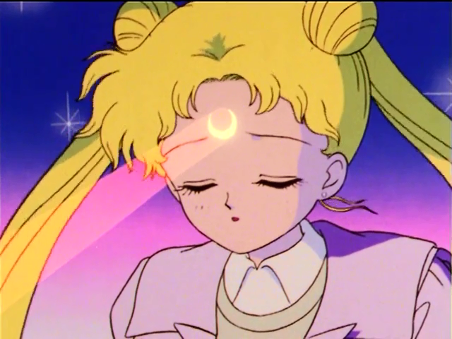

《美少女战士》描绘了主人公月野兔在某一天意外救下一只头上有月牙印的黑猫露娜，并从此改变她个人命运，获得月棱镜变身成为爱与正义的水手服美少女战士，开始对抗黑暗势力的漫长故事[3] 。《美少女战士》为日本商业动画的代表作，它还被翻译成多国语言，在亚洲乃至欧美等国家和地区播映。美丽可爱的月野兔是一名正就读初中的女孩，她学业平平，任性娇弱，可是在遇到了那只会说集的小猫露娜之后，月野兔的人生发生天翻地覆的变化，她甚至可以变身成为拥有神奇能力的水手月亮。
为了保卫地球，挫败黑暗帝国的野心，月野兔和水野亚美、火野丽、木野真琴、爱野美奈子等人结成美少女战士，与罪恶展开了连番激战。第1集 爱哭鬼小兔的华丽变身14岁的初二女生月野兔是个性格迷糊的爱哭鬼。某天，在赶往学校的路上，她救下了遭到小孩子们欺负的黑猫露娜，并揭下了它额头上的封印。在露娜的指引下，小兔变身成了水兵服美少女战士水兵月亮，并消灭了附身在奈留妈妈身上的恶魔。从此，小兔肩负起对抗黑暗势力，以及寻找月亮公主的使命……第2集清醒吧！占卜店是妖魔之馆十番街新开了一家占卜屋，店里的灵力少女占卜很准，吸引了许多学生前往占卜。其实，灵力少女是黑暗王国派出的恶魔，专门吸取学生们的能量。占卜过的学生全都性格大变，行为轻佻。露娜从他们身上感受到邪恶力量，便让小兔前往占卜屋调查。在这里等着她们的是失去理智的同学和邪恶的魔女……第3集 神秘睡眠病！保护少女恋爱的心《午夜零点》是一档情书分享节目，情书被选中者会获得节目赠送的花形胸针。小兔也很想获得胸针，可她并不知道这与最近流行的神秘嗜睡症有着莫大的关系。奈留的情书被节目选中播出，她获得胸针后也患上嗜睡症，小兔为此潜入电台调查真相。这次，小兔将与杰戴特直接对阵…第4集 小兔教授变窈窕的方法小兔的体重又增加了，为了瘦身，小兔开始了节食减肥，可是收效甚微。春菜老师的身材在短时间内变得很好，这令小兔无比羡慕。小兔从海野那打听到，春菜老师去莎普林健身中心锻炼才有了这样的效果。于是，小兔等人也来到了莎普林。然而，等待她们教练竟然是杰戴特……